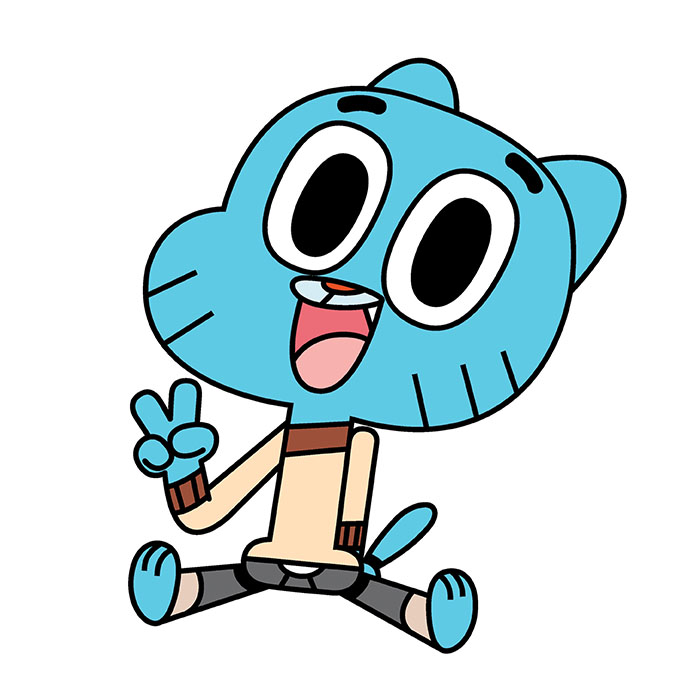

おかしな日常
おかしなガムボール
おかしなガムボールとは
カートゥーンネットワークで放送されている、イギリス発のナンセンスコメディ。
十二歳の青いネコ「ガムボール」を主人公に、家族やクラスメートが様々なトラブルを引き起こしていく。
アニメーションでありながら実写の街を舞台としていたり、クラスメートがジャガイモやバナナやロボットだったり、ハチャメチャな設定。
頭を使って見ると混乱するので、見るときは頭は使わないようにしましょう。

ワタソン家のペットで、10歳の金魚。
エルモア・ジュニア・ハイの生徒でガムボールのクラスメート。
金魚でありながら色々あって肺呼吸ができ、会話ができ、手足が生えている。また、ペットでありながらガムボールの親友として、ワタソン家のもとで兄弟同然に育てられてきた。
純粋な性格。純粋なあまりガムボールに振り回されがち。
一緒にトラブルを引き起こしている。
ワタソン家の長女で、4歳のピンクのウサギ。
エルモア・ジュニア・ハイの生徒。
4才でありながら天才的な頭脳を持ち、なんと学年はガムボールたちより上。
その頭脳で、隣人のコンピューターに侵入したり、ダーウィンが受けるはずだった学力テストで満点を取ったりしている。
しかし4歳児らしい一面もあり、お気に入りのぬいぐるみ「デイジー」をいつも持ち歩いている。
ガムボールたちの母。
レインボーファクトリーに勤務している。
ワタソン家の経済を支える大黒柱であり、非常に高い戦闘力を持つ。
ガムボールたちの父。
無職の食いしん坊。
エルモア１のぐうたらである。
食べることがとにかく好きで、彼の脳みその大きさはアメーバ以下だという。
エルモア・ジュニア・ハイの毛むくじゃらの校長。
しかし校長とは名ばかりで、実際は役立たずで、免許さえも偽装である。
校長室の壁に貼ってある免許は実は壁に描かれた絵であり、免許の認証マークはバナナのブランドシールで代用されている。
ガムボールたちの担任教師。ガムボールを問題視し、全生徒に常に厳しい目を向けている。
自分の仕事が嫌い。
ガムボールをあの手この手で懲らしめようとしたこともあるが、すべて失敗に終わっている。
ブラウン校長の恋人。
よく校長室でイチャイチャしている。
エルモア・ジュニア・ハイのスクールカウンセラー。
自称ヴィーガン。
優しいが変わり者で、よく怪しくて変わった何かを崇拝している。
ガムボールのクラスメートの女の子で、初期はピーナッツだったが、色々あって殻を破り姿が変化した。
ガムボールのガールフレンド。
チアリーディングチームのリーダーを務めている。
ガムボールのクラスメート。
お金持ちでナルシスト。
ガムボールの親友だと言い張るも、トバイアスは6番目に仲良しの友達だとガムボール本人に打ち明けられたことがある。
ガムボールのクラスメートのバナナ。
クラス1のお調子者だが、笑いのセンスは微妙。
ガムボールの仲良しトップ5に入るくらい、ガムボールたちとは仲がいい。
特に、ダーウィンとはお泊りをするくらいなのでかなり仲がいい。
ガムボールのクラスメート。
植木鉢に挿さった花。
ガムボールの仲良しトップ5の一人。
かなりのおしゃれ好きで、誰も追いつけないファッションセンスを持つ。
ガムボールのクラスメートのロボット。
ガムボールの仲良しトップ5の一人。
「愛」を知らないなど、ロボットらしい一面を持つ。
ロボットであるがゆえに、無意識に人を傷つけようとしてしまうこともある。
ガムボールのクラスメート。
ゴーストの少女で、ダーウィンのガールフレンド。
ガムボールの仲良しトップ5の一人。
ゴーストなので雰囲気が暗い。
でも、人を驚かすのは好き。
ガムボールのクラスメートで、アイスクリームの少女。転校生。
ガムボールの仲良しトップ5の一人。
かなりのオタク気質で、アニメオタク、漫画オタクにとどまらず、ガムボールとダーウィンのオタクでもある。